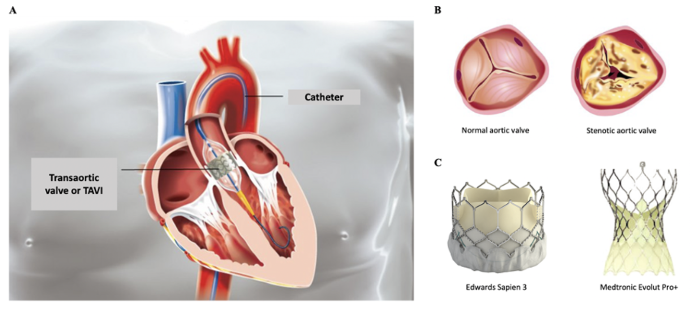

Example 1

In the first paper(Mentias et al. 2023), the authors conclude
“In Medicare patients with pure native AR, TAVR with the current commercially available transcatheter valves has comparable short-term outcomes. Although long-term outcomes were inferior to SAVR, the possibility of residual confounding, biasing long-term outcomes, given older and frailer TAVR patients, cannot be excluded.”
While acknowledging that TAVR was associated with higher unadjusted (HR, 1.90; 95% CI, 1.59-2.26; P < .001) and adjusted risk of all-cause mortality compared with SAVR (adjusted HR, 1.41; 95% CI, 1.03-1.93; P = .02) with long term follow-up (which may indeed be at least partially explained by residual confounding), the authors interpret the results as being comparable for the two techniques at one year. They report one year propensity score adjusted mortality as 5.7% and 6.9% mortality in the TAVR and SAVR patient, respectively (p=0.3).
Drawing conclusions based on p values is known to be dangerous and a proposed, albeit perhaps minor, improvement is to use confidence intervals(Wasserstein, Schirm, and Lazar 2019). The following shows the risk difference with the 95% for the two mortality outcomes.
prop.test(c(round(c(.057*9880,.069*1147))),c(9980,1147))
##
## 2-sample test for equality of proportions with continuity correction
##
## data: c(round(c(0.057 * 9880, 0.069 * 1147))) out of c(9980, 1147)
## X-squared = 2.7, df = 1, p-value = 0.1
## alternative hypothesis: two.sided
## 95 percent confidence interval:
## -0.028287 0.003362
## sample estimates:
## prop 1 prop 2
## 0.05641 0.06888
The implies that even ignoring any biases, concluding that the two approaches have similar short term outcomes is only reasonable if one believes that a possible 2.8% absolute mortality reduction with SAVR from sampling variation alone is not clinically important. Others might consider that the conclusion is another example of conflating absence of evidence with evidence of absence and that additional data is required before drawing firm conclusions. This underscores the problem with dichotomized p values and risk ratios (as opposed to risk differences) as decision making tools.
Example 2
A NEJM article(Pacheco et al. 2023) reported P that "the prophylactic use of tranexamic acid during cesarean delivery did not lead to a significantly lower risk of a composite outcome of maternal death or blood transfusion than placebo" (RR 0.89; 95% CI 0.74 to 1.07; P=0.19 for the primary outcome). These results could also be expressed as risk differences and attributable risks.
mat1 <- matrix(c(233,201,5238,5328), nrow = 2,
dimnames = list(c("placebo","tranexamic acid"),c("Outcome +","Outcome -")))
mat1
## Outcome + Outcome -
## placebo 233 5238
## tranexamic acid 201 5328
epiR::epi.2by2(mat1)
## Outcome + Outcome - Total Inc risk *
## Exposed + 233 5238 5471 4.26 (3.74 to 4.83)
## Exposed - 201 5328 5529 3.64 (4.26 to 4.26)
## Total 434 10566 11000 3.95 (3.59 to 4.33)
##
## Point estimates and 95% CIs:
## -------------------------------------------------------------------
## Inc risk ratio 1.17 (0.97, 1.41)
## Odds ratio 1.18 (0.97, 1.43)
## Attrib risk in the exposed * 0.62 (-0.10, 1.35)
## Attrib fraction in the exposed (%) 14.64 (-2.70, 29.05)
## Attrib risk in the population * 0.31 (-0.30, 0.92)
## Attrib fraction in the population (%) 7.86 (-1.76, 16.57)
## -------------------------------------------------------------------
## Uncorrected chi2 test that OR = 1: chi2(1) = 2.820 Pr>chi2 = 0.093
## Fisher exact test that OR = 1: Pr>chi2 = 0.096
## Wald confidence limits
## CI: confidence interval
## * Outcomes per 100 population units
The risk difference is 6 fewer outcomes /1000 treated (95% CI-13.5, 1.0) and the attributable fraction is 14.6% (95% CI -2.70, 29.05) of outcomes being eliminated by treatment. While these measures do not reach statistical significance, they may provide some additional insights into the trial's interpretation as the associated sampling variations suggest an effect size as large as 13 fewer outcomes / 1000 treated and an attributable fraction as large as 29% have not been eliminated. If one believes these potential measures are of clinical importance, then continuing research with this agent may be indicated.
Example 3
The third paper is entitled ” Effect of a Run-In Period on Estimated Treatment Effects in Cardiovascular Randomized Clinical Trials: A Meta-Analytic Review”(Murphy et al. 2022) and the authors concluded “The use of a run-in period was not associated with a difference in the magnitude of treatment effect among cardiovascular prevention trials”.
I found this result to be a priori very surprising. However without the raw data it is difficult to completely reproduce and assess what the authors have done. Nevertheless working with the aggregate data from the last column in Figure 1, I have performed a Bayesian analysis, with a vaguely informative prior such that the results are completely dominated by the published data.
The posterior probability is displayed below.

ggplot version

Based on this analysis, the probability that run-in trials has a larger treatment effect than non-run-in trials was 99 %. There was an 81 % probability that the effect size was at least 5% greater in the run-in trials. While this effect is not large, it is more in keeping with face validity that would suggest that run-in trials, by excluding non-compilers and those developing side effects, would be expected to yield a larger effect size than a comparable trial without a run-in period.
References
Mentias, A., M. Saad, V. Menon, G. W. Reed, Z. Popovic, D. Johnston, L. Rodriguez, et al. 2023.
“Transcatheter Vs Surgical Aortic Valve Replacement in Pure Native Aortic Regurgitation.” Journal Article.
Ann Thorac Surg 115 (4): 870–76.
https://doi.org/10.1016/j.athoracsur.2022.09.016.
Murphy, R. P., M. J. O’Donnell, A. Nolan, E. McGrath, A. O’Conghaile, J. Ferguson, A. Alvarez-Iglesias, et al. 2022.
“Effect of a Run-in Period on Estimated Treatment Effects in Cardiovascular Randomized Clinical Trials: A Meta-Analytic Review.” Journal Article.
J Am Heart Assoc 11 (20): e023061.
https://doi.org/10.1161/JAHA.121.023061.
Pacheco, L. D., R. G. Clifton, G. R. Saade, S. J. Weiner, S. Parry, Jr. Thorp J. M., M. Longo, et al. 2023.
“Tranexamic Acid to Prevent Obstetrical Hemorrhage After Cesarean Delivery.” Journal Article.
N Engl J Med 388 (15): 1365–75.
https://doi.org/10.1056/NEJMoa2207419.
Wasserstein, RL., AL. Schirm, and NA. Lazar. 2019. “Moving to a World Beyond ‘p < 0.05’.” Journal Article. The American Statistician 73: 1–19.